Dieppe 2004


Cette immense plage de sable fin, vous connaissez ? Ben oui, c'est Dieppe, mais faut se lever tôt, sinon, "sous la marée : la plage" ! Mais au niveau supérieur, il y a les pelouses, et là, tous les 2 ans, le plus grand festival de cerf-volant du monde et c'était cette année !

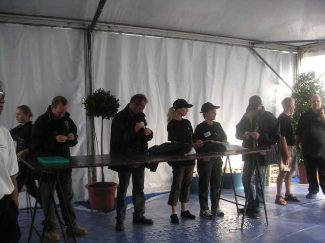
Bien sûr, on commence par un petit briefing pour présenter Laurent, Sophie, Marcel, Jason, et tous les autres. Et ensuite, Dura Lex Sed Lex : pas de tentes ni de bannières coté public ! Beaucoup trouveront ça sévère et frustrant, même pour les spectateurs : le camp du drap d'or et les bannières font partie de l'ambiance de fête colorée et bigarrée des festivals de cerf-volant, y a qu'à voir l'inventivité dans ce domaine, même des tentes de tous genres, et le public suit avec plaisir le bric-à-brac étalé et les bricolages des cervolistes. Et puis la plupart des tentes ne montent pas assez haut pour cacher le spectacle au public, guère plus que les bandeaux publicitaires plaqués sur les barrières, en tous cas...

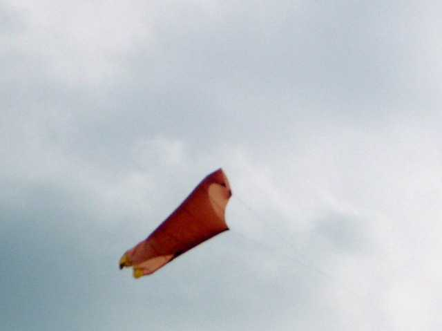
Mais bon, ça n'empêchera pas de voler, même si le premier week-end est plutôt violent et bien arrosé (surtout par le ciel, je veux dire).

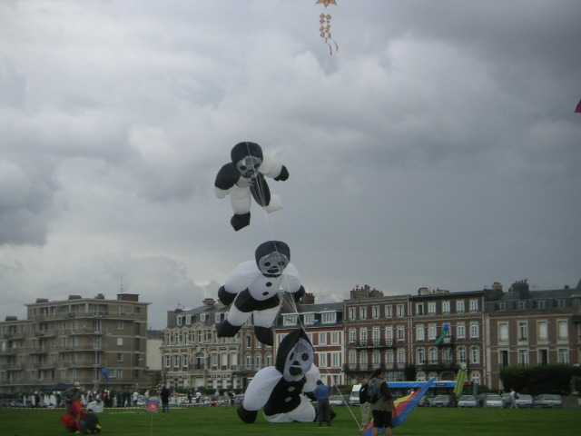
Des vrais cerfs-volants mais aussi des machins gonflables...

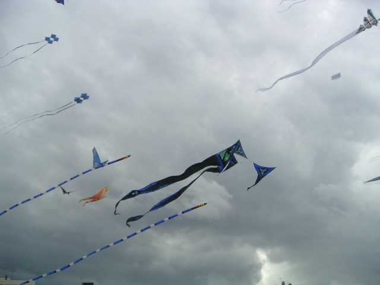
Le ciel devient même bien meublé : voilà 2 caissons de Michel Gressier qui portent les 2 queues bleues, le CV central est un Delta enrichi de Claude Lebourgeois, le bleu plus clair une création de Didier Ferment, le Worm vole en arrière plan et, en haut à droite, le beau CV de Jacques de Vierzon a changé avec bonheur sa queue jaunâtre pour une blanche (voir reportage sur Chambord à ce sujet).

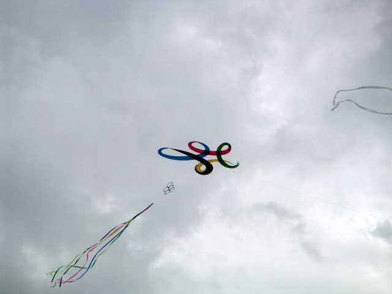
Ce joli CV de Li Ruo Xin fait environ un mètre, il est en papier et bordé en bambou carré d'à peu près 1,5 mm !

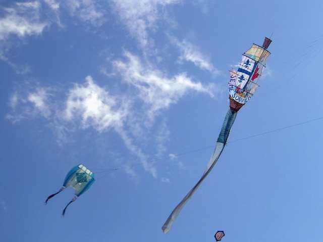
Dieppe Canada est aussi présent avec cette magnifique nef historique! Et dorénavant Dieppe Acadie tiendra son festival en alternance avec Dieppe France.

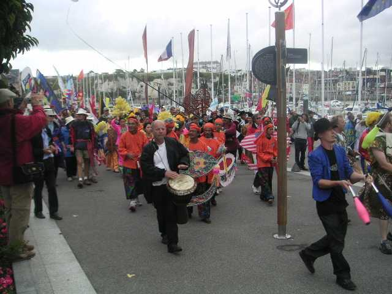

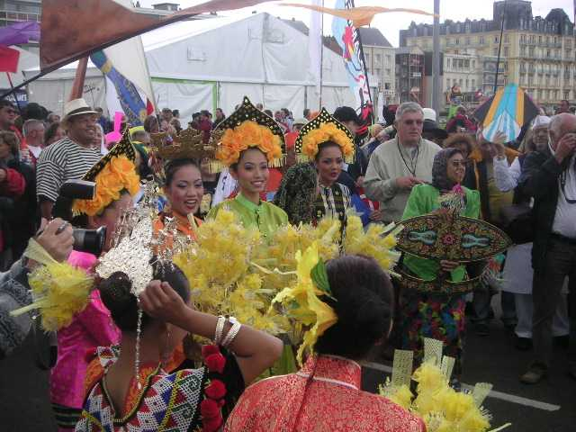
Le premier week-end, c'est aussi la parade colorée, cosmopolite et bruyante en ville.

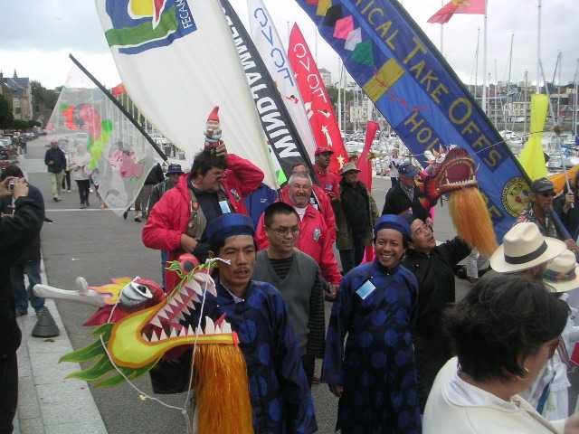
Des bannières, des danseuses, des dragons, même des cerfs-volants !

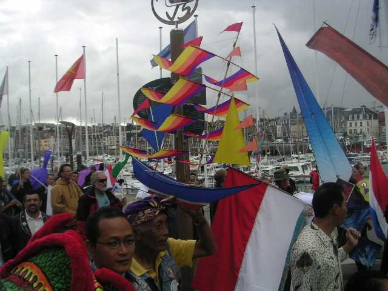
...le vieux briscard et le bateau de Bali...

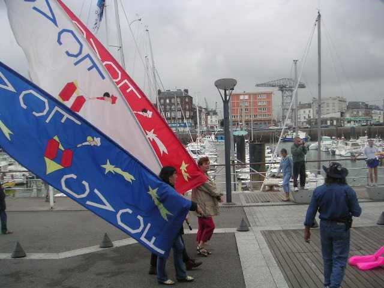
Le CVCF clôture le défilé avec ses bannières aux trois couleurs.

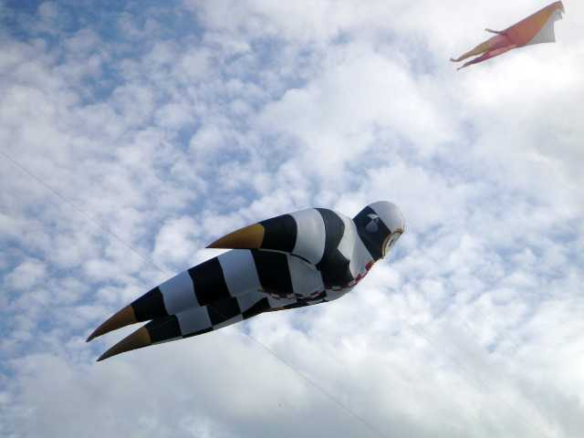
On revoit quelques créateurs moins présents ces temps-ci, comme Pierre Fabre et son grand "Bibendum".

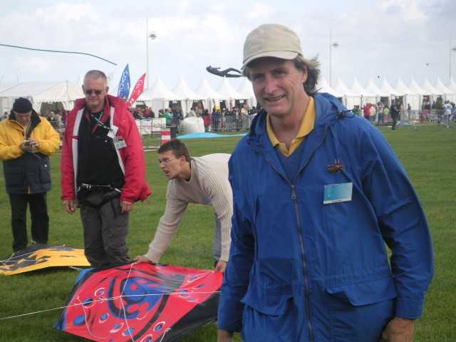
Ou ce helper que vous connaissez sûrement !

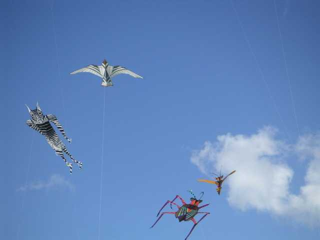
...ou en tous cas ses cerfs-volants célèbres et inimitables.

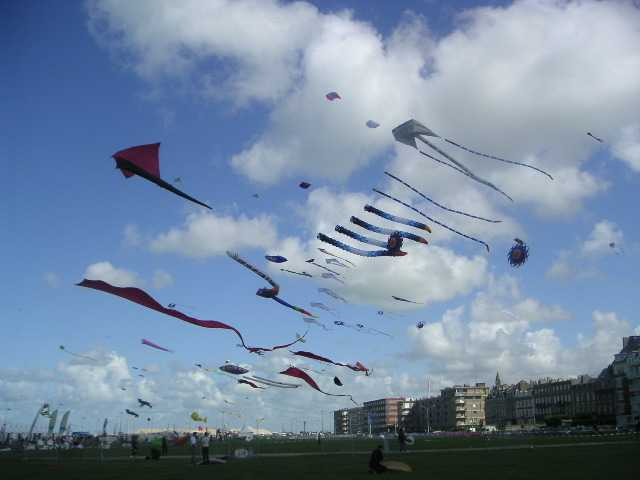
Il y a aussi beaucoup de grands cerfs-volants sur les 8 hectares de pelouse.

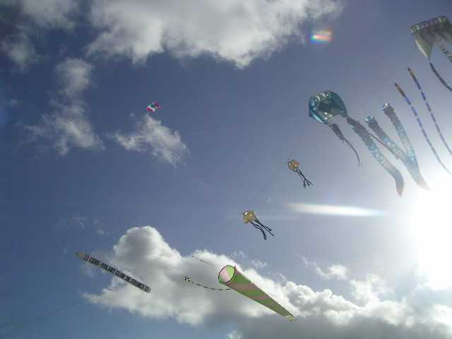
Des qui volent sur les pelouses comme celui de Michel Gressier, accompagné du noeud celte de Claude...

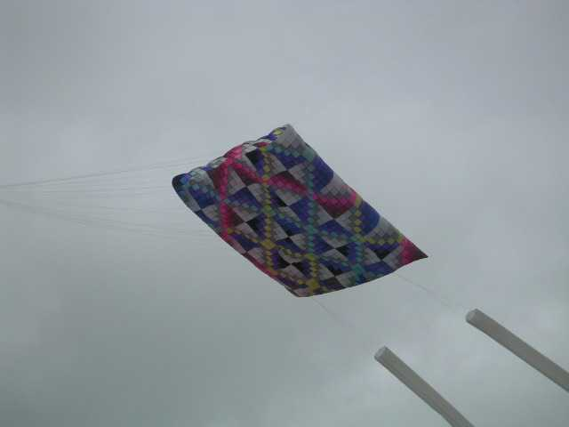
...ou des qui ont boycotté leurs aires réservées, là-bas tout au bout loin, pour voler sur la plage près du public, comme ce grand édredon, la pieuvre, la tortue, les geishas-édredon (voir plus loin) de Peter Lynn, ou l'équipe AWITA.

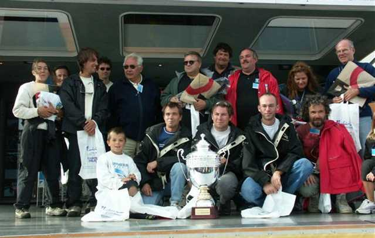
Le premier dimanche se termine aussi le trophée Taranis (2ème édition), créé par la branche cerf-volant de la FFVL, et qui fait concourir des clubs sur 6 disciplines (on dit un hexathlon ?) : ballet, combattant, combat de rokkakus, monofil, aérophoto, jardin du vent. C'est le CVC Jules Verne qui gagne. Le CVCF n'a présenté que 2 disciplines, on est quand même quatrième.

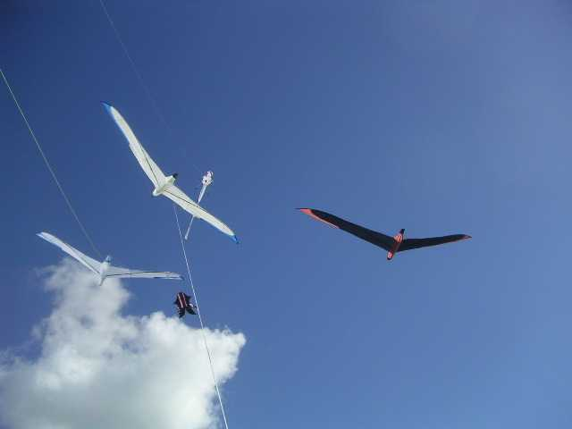
Albatros : on fait un vol de groupe, d'abord à trois, avec le mien, celui de Michel Gressier et celui des Mouchague (le noir) !

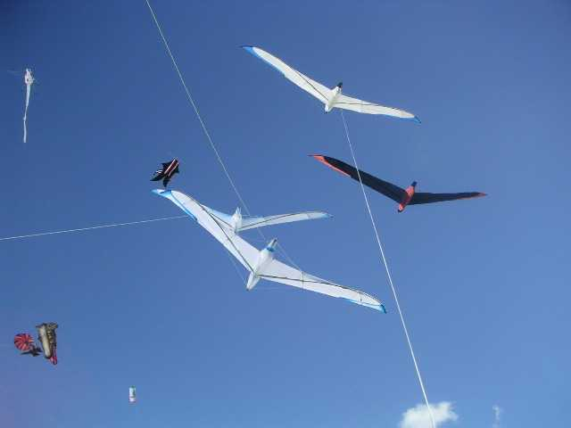
Contents du résultat, on amène le quatrième (de Michel).

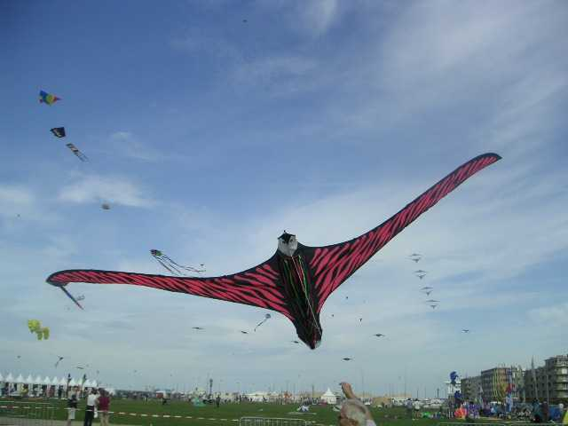
Un concurrent belge, inspiré de la même structure, mais différemment interprétée, arrivera trop tard pour participer au bal des Albatros.

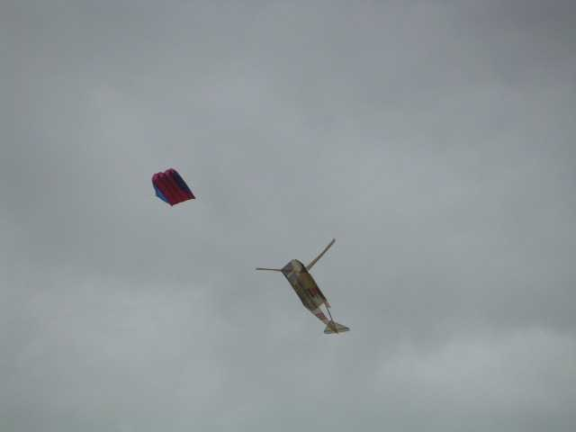
On en voit des cerfs-volants bizarres, ça fourmille dur dans le cerveau des créateurs !

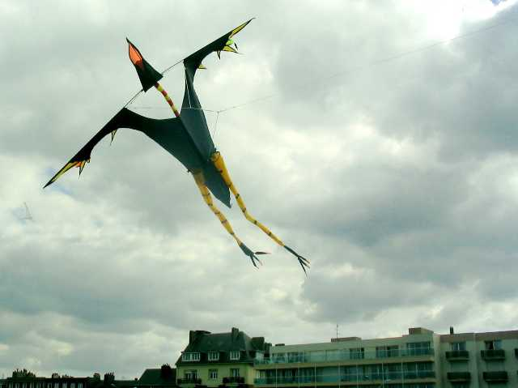
Ce corbeau doit être né à Tchernobyl il n'y a pas très longtemps...

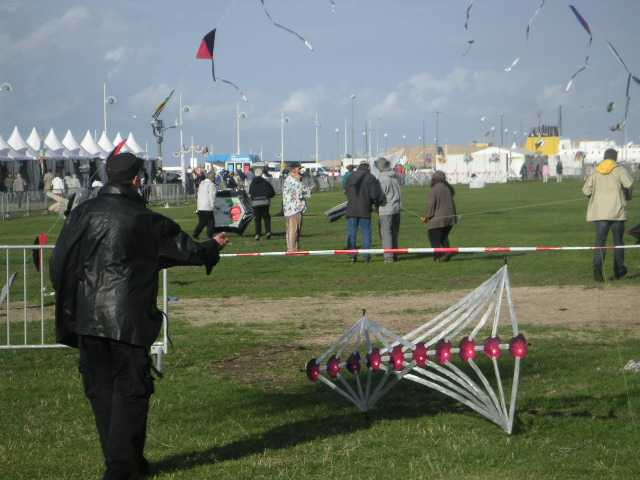
Kisa présente toujours des créations esthétiques et particulières.

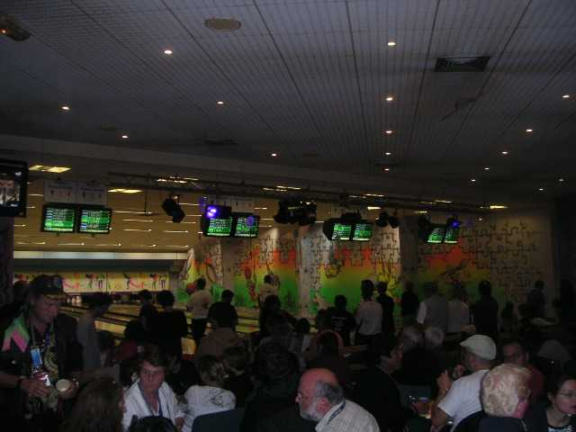
Lundi : Soirée Bowling. Au programme, sandwichs, boisson et partie de bowling. C'est une découverte pour certains, et tout le monde s'emploie de bon coeur mais on voit pas mal de gouttières... C'est Sylvain qui gagnera avec 177 (le record est à 180, dommage) !

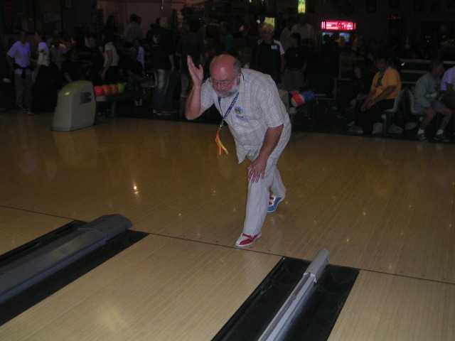
Sylvien, lui, malgré nos recommandations répétées, force trop en fin de mouvement. Son résultat : déchirure musculaire à l'épaule droite qui s'aggravera évidemment avec la pratique du cerf-volant... Bah, un bras en écharpe, ça n'empêche pas de voler...
Le lendemain, on repique au turf. La météo s'est améliorée par rapport au week-end et ça vole de partout.

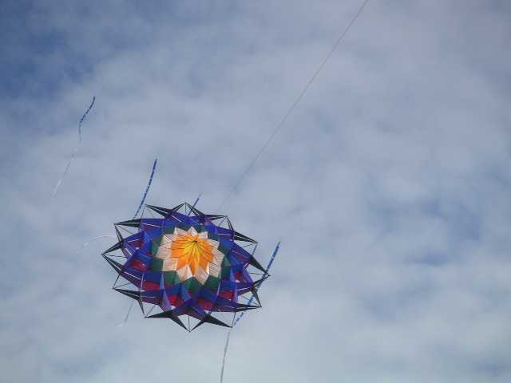

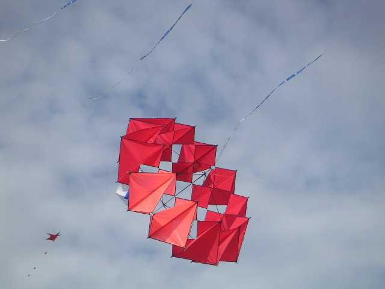

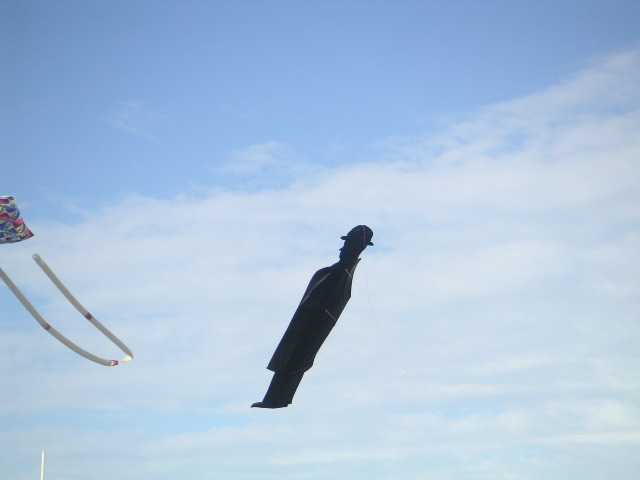

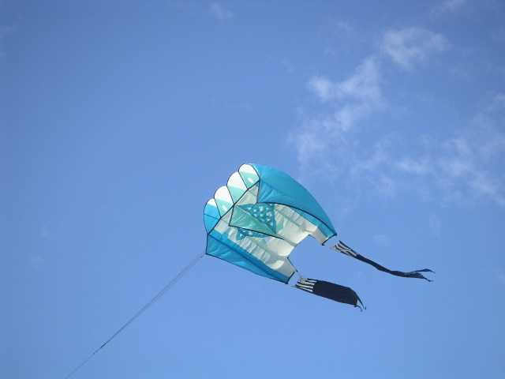

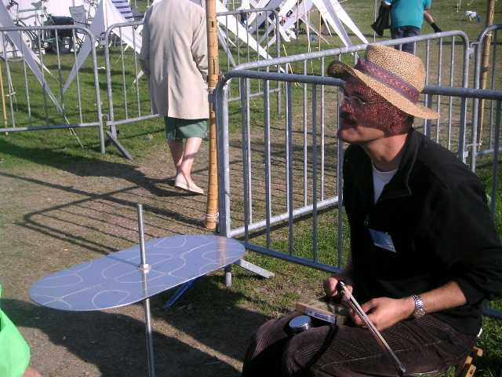
Uli présente ses plaques vibrantes qu'il sollicite de l'archet et sur lesquelles se dessinent des lignes de sable selon les noeuds et les ventres de vibration.

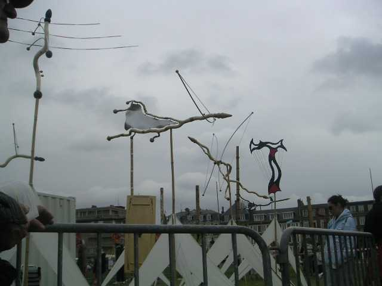
Robert présente ses arcs vibrants à la finition luxueuse. Certains ont un peu souffert d'une grande arche qui a été coupée et qui est venue tout ramasser...

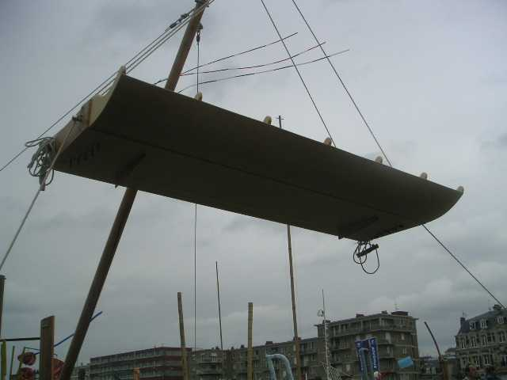
Il a aussi réalisé une harpe éolienne au son planant.

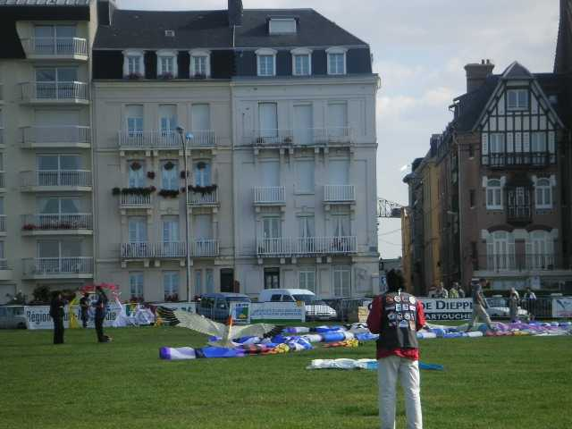
Li Ruo Xin a profité du vent faible pour sortir son oiseau qu'il manipule pour le faire cercler au-dessus de sa tête. D'accord, il y a des photos plus parlantes sur son site, n'hésitez pas à faire travailler monsieur Google.

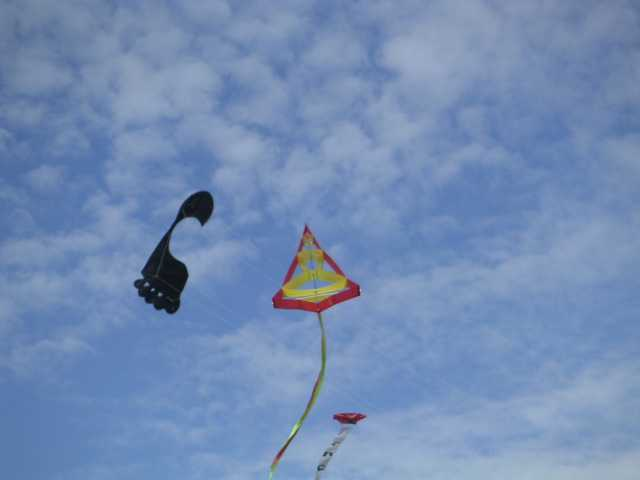
L'Eddy de Loïk est bien de lui : inversé, retourné et perpendiculaire. Le pied de Thérèse est un 4 lignes bien connu.

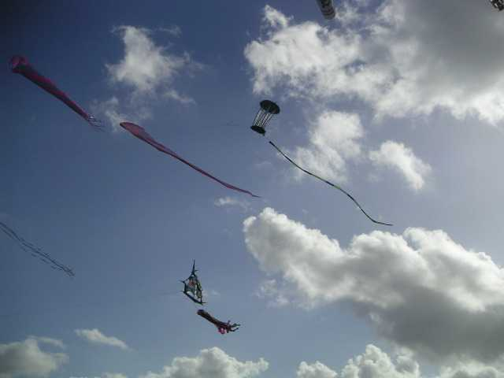
alors qu'elle ne devrait pas !
Loïk fait aussi voler son tabouret (je ne sais plus le nom qu'il lui donne) et, en bas, sa cathédrale (elle peut voler sans queue si le vent est assez musclé).

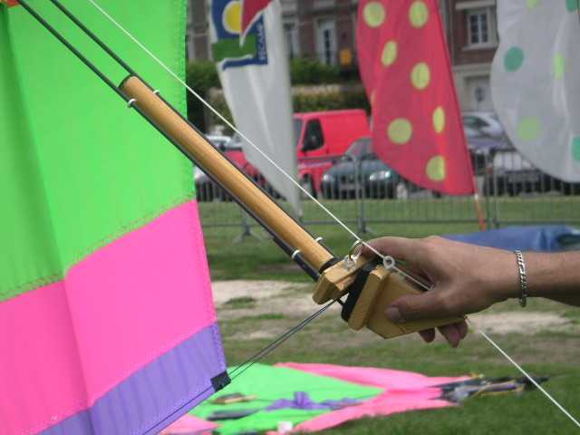
Cette navette originale fonctionne par inertie. Lors du choc en haut, le mandrin en bois central coulisse vers le haut et ouvre le crochet. En bas, dans la main de l'auteur, c'est juste une butée.

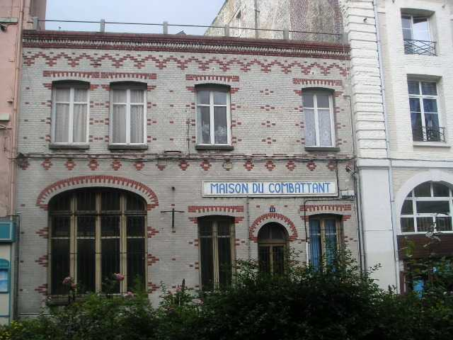
Les soirées, en semaine, c'est le plus souvent, pour notre bande, au "Jupiler", 2ème restaurant après l'Aguado, en face du marché couvert de Roland (vous savez, là où il débite des km de tube), à coté du siège du Manjha Club (photo de droite).

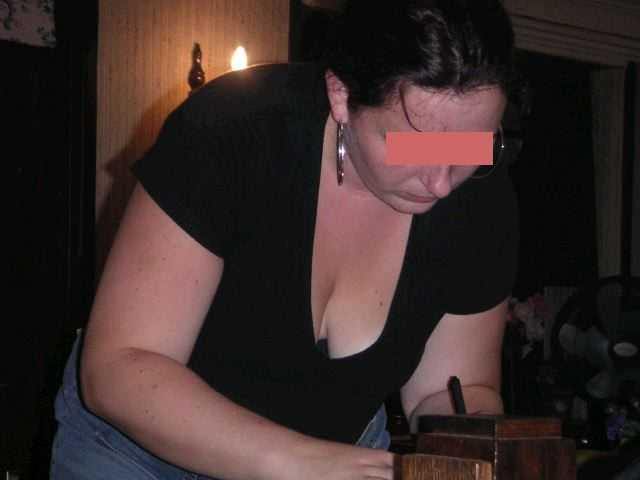
On finit par connaître tout le personnel (enfin, superficiellement...) (enfin, je veux dire, de loin, quoi !).

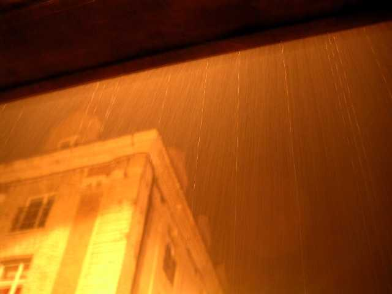
En sortant, l'atmosphère n'est pas toujours aussi chaude qu'à l'intérieur...

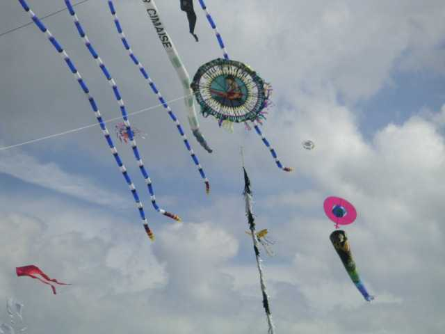
Toute la semaine, le Guatemala se mêle à la bagarre avec un calendrier Maya. Le CV à droite représente le signe de Vénus pour le concours "femme". La queue vue de plus près est très belle.

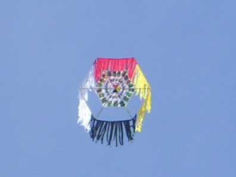
Une autre version de CV guatémaltèque, sans queue mais pleine de franges. Il faudra des vents solides pour le voir en l'air avec cette surface limitée.

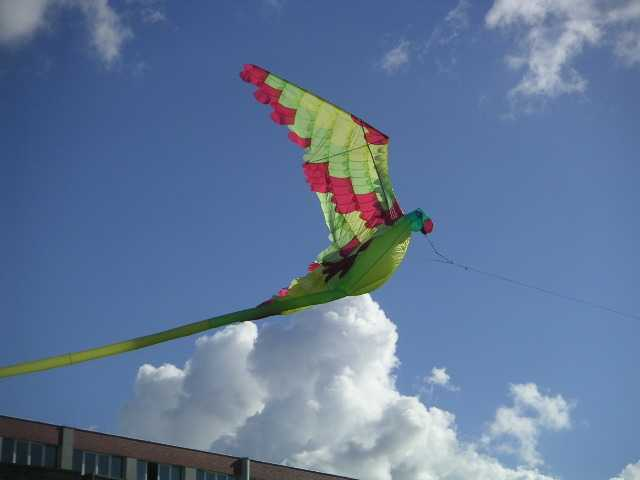
Un beau perroquet de 4 ou 5 m vole derrière les jardins du vent.

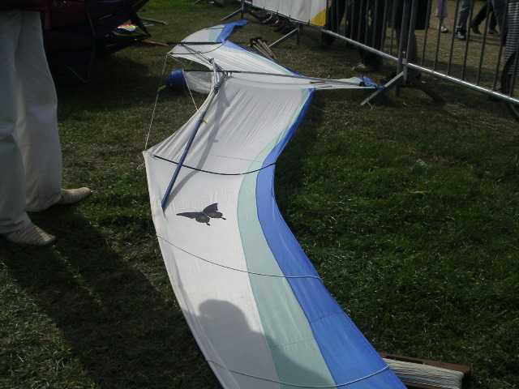
Monsieur Li pose son cerf-volant (12 cm) sur Megoel (8m). Li est aussi un spécialiste des micro-cerfs-volants (de quoi n'est-il pas spécialiste ?).

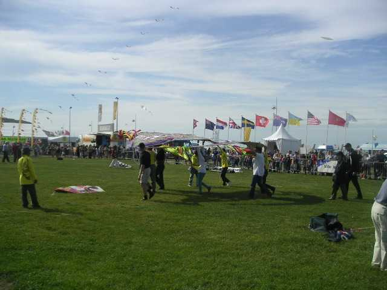
Le grand Wau-Lune arrive porté par sa troupe.

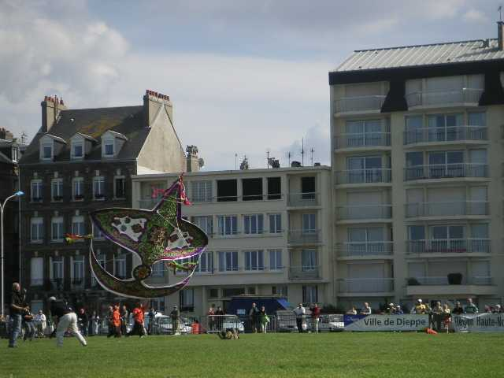
Après quelques réglages violents à base de découpe de trous, il volera impeccablement dès que les cervolistes auront revêtu le costume de cérémonie. Il paraît que c'est le premier géant à voler hors de son pays, ils en pleuraient !

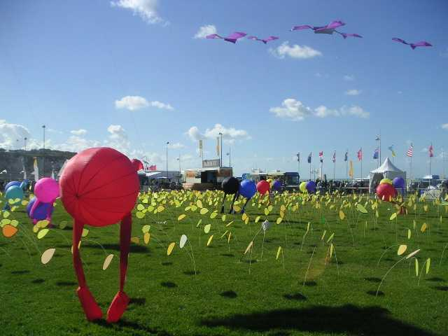
Les Neunoeils d'AWITA contemplent ces événements du milieu de leur splendide champ de blé (de Richon ?).

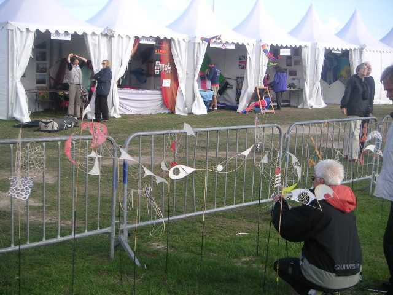
Thérèse a encore amélioré ses jardins, triomphe de l'esthétique de la finesse.

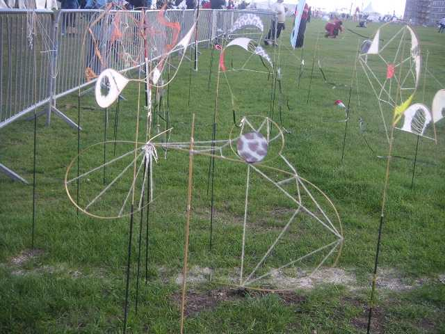
Elle a planté son jardin à coté de ses cerfs-volants, dur d'avoir plusieurs activités ! Moi, je n'ai pas fait voler mes oiseaux 2 lignes, ça fait trop loin pour surveiller tout.

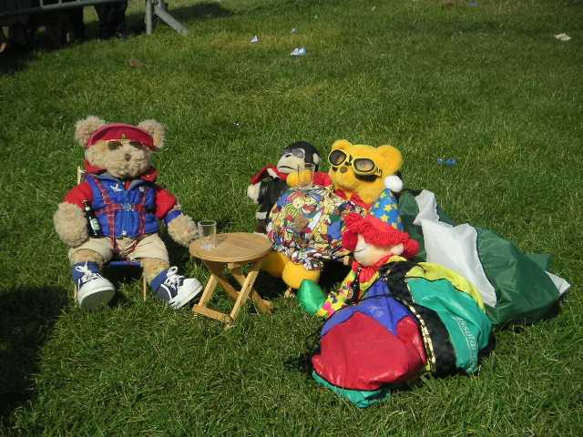
Les nounours attendent sagement leur largage en parachute en se dopant à la bière anglaise (y a pas de contrôle cette année, faut en profiter).

En semaine, il y a des moments creux quand il drache...

Mais sinon, en semaine comme en week-end, il y a eu sacrément du monde dans le village comme le long des aires !

Accueil, marchands du Temple, restaurant, Espace Création, tente VIP, Acadie, Philatélie, il y a des centres d'intérêt et des chalands au "Village".

Et au sol, il s'en passe des choses : Michel a menuisé des bambous sonores d'une taille impressionnante.

...ou bien il finit de peindre ses cerfs-volants !

Dans le stand Australien, un allemand joue du didjeridoo.

Des animateurs vont circuler pendant tout le festival pour jongler, jouer de la musique, prestidigiter et tout et tout.

Mister Alvarez fait jouer les enfants avec son serpent tourbillonnant !

Logos restera bien sage dans sa tente (il a le droit, elle n'est pas sur les aires, et de toutes façons, il a son badge). Il en aura coûté des photos ! (on n'ose plus dire de la pellicule !).

Pendant ce temps, ça n'arrête pas de voler . La Belgique a réussi la gageure de faire voler un cerf-volant rond !

Eric le copie, et bientôt la monnaie se retrouve en l'air ! Bientôt la Banque de France et de Belgique réunies !

Une étrange fleur de lys surveille ça de haut.

Un cerf-volant carré, bien stable, mais je n'ai pas vu les détails de construction. Cela semble être un assemblage de cellules style Bell.

Un cerf-volant d'une grande stabilité et quasi parallélipipédique ! Il est extrêmement stable. Un secret de construction : les cloisons sont disposées en travers et non en long comme dans tous les gonflables. C'est vrai, y a pas de raisons...

Un cerf-volant danseur, de Richon, je crois.


Avec sa remorque à impériale, Jean-Claude Anquier peut trimballer ses jardins, avec ses superbes salades et des moulinets de bouteille de plus en plus sophistiqués.

Un labyrinthe vrombissant sur l'aire des jeunes, agrémenté de Dalton, de Lucky Luke et d'indiens, tous mus par des éoliennes...

Mais le classique moulinet indonésien sculpté dans le bambou reste bien beau, même s'il finit par perdre des morceaux dans les tempêtes dieppoises.

Le quart d'heure du poisson : Je ne sais pas si c'est vraiment un poisson ou un grand ver marin, mais c'est pas mal et ça vole bien.

Un Fugu pris exceptionnellement à peu près à l'endroit, malgré les vents tourbillonnants...

Peter Lynn a monté sa raie, et son édredon aux geishas est bien beau.

Je reviens aux jardins du vent : croyez pas que je vais trier, tous les CVs d'un coté, les jardins du vent de l'autre, etc., c'est pas un musée, ici. Donc les JdV de Patrick ont bien changé : les épouvantails en paille ont disparu (décomposés par la pluie ?). Mais maintenant, il a beaucoup plus de créations personnelles plus intéressantes.

Son ensemble de clés aux rubans bleus est une oeuvre d'art qui ne déparerait pas bon nombre de galeries parisiennes.

Son ensemble bleu est aussi attirant.

Fernando continue à perfectionner ses cactus en partie rotatifs, avec des fleurs nouvelles et des "mains" de figuier de Barbarie.

Plus loin, des petites "bulles à vent" se tiennent debout gonflées seulement par la pression du vent.

Un étendard très spécial est dressé très en hauteur dans le ciel, en partie par le vent.

Vendredi : Soirée Gymnase. Des cars nous montent, des cars nous redescendront, en nombre suffisant (pas comme il y a 2 ans où il avait fallu attendre 2h30 du matin sur le trottoir...). C'est vrai qu'il y a du monde... du monde entier.

En ouverture, spectacle de danse de la Malaisie en costume.

La chanteuse est aussi une remarquable et envoûtante danseuse, les danseurs faut aimer, je demande aux dames leur avis (voir adresse en bas de ma page Accueil).

Au fond trône le cerf-volant portant le drapeau de toutes les nations présentes et que tous les membres pourront signer (sur leur drapeau).

Évidemment, on joue à tous les petits jeux de soirée : CV indoor, avion en papier, édifices équilibristes, etc.

Même monsieur Li a imaginé de faire un petit trou dans une bouteille d'eau et de la proposer de table en table. Je vous dirai pas ce que moi j'ai fait.

Le Fokker triplan du Baron Rouge n'a pas encore décollé, mais il le fera.

Ce bateau de Bali encore à l'ancre est un géant du genre, plein de voiles et de pavois dans tous les sens.

Le delta est un classique mais on peut toujours le renouveler si on a des idées...

La Main de Fatma du CVC marocain animé par Louis Sko renouvelle le genre.

Une soirée réservée aux femmes a été organisée, il s'y est passé de drôles de choses, s'pas Cyril ?

Le vol de nuit a été mouvementé avec de splendides rideaux de pluie balayés par la tourmente dans le feu des projecteurs. Le qualificatif le plus souvent employé a été "dantesque". A part ça, j'ai trouvé bien le découpage en tableaux successifs par des musiques différentes ponctuées par les variations d'éclairage. Cela apporte du mouvement au lieu d'une heure et demie de spectacle sans grand changement sauf les CVs qui s'accrochent ou le vent qui tombe.
Le lendemain, le grand concours sur le thème proposé : "la femme, nature et splendeur".


Le CVCF (Cerf-Volant Club de France) avait organisé un petit pot à son stand dans la semaine.

Il a aussi décerné son prix Coup de Coeur qui récompense un cerf-volant sans que son créateur ait à s'inscrire ou à s'imposer un thème quelconque, ni même le sache. Le jury réunissait des membres du CVCF et de l'organisation.

C'est un cerf-volant très délicat et bien architecturé, le "Masque de Ciel" qui a gagné.
Hé bien c'était un beau festival, merci à l'Organisation, refaites nous ça vite, pourquoi attendre 2 ans ?